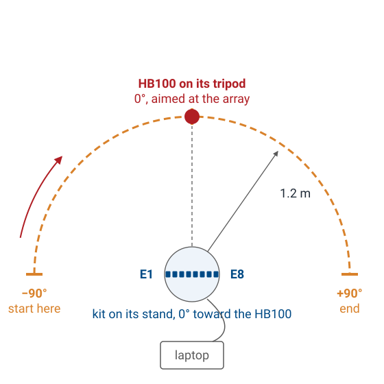
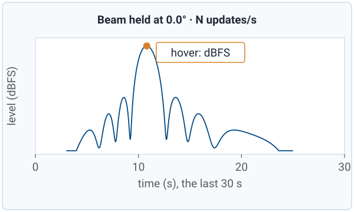

L21 Lab — Antenna Pattern#
Antenna Pattern
Hold the beam still and sweep the HB100 in azimuth, by hand and on the stand.
L21 Lab · Antennas, Phased Arrays, and Radar Systems · Dr. Neil Rogers
Printing
To print the slides, switch to present mode and print: one slide a sheet, with room for notes. Print from read mode for the whole lesson.
Learning Objectives
- I can distinguish between array factor and true antenna pattern and account for element pattern effects.
The Big Picture
Steps |
Run |
Beam |
Moves |
|---|---|---|---|
1 to 6 |
Bring up |
||
7 to 9 |
1: beam sweep |
stepped |
kit |
10 to 15 |
2: by hand |
held at 0° |
HB100 |
16 to 19 |
3: on the stand |
read at 0°, 30° |
kit |

Lesson 21 compared the kit’s beam sweep, which steps the beam past a fixed HB100, with an azimuth sweep, which holds one beam and moves the source. Today you take both on your own kit and compare the lobe levels in dBc against the predictions you made in Part 1 of the packet.
Run 1 confirms that the stand’s scale and the kit agree on the sign of the source angle, then takes the beam sweep: Tables A and B in Part 2 of the packet. Run 2 holds the beam at 0° while you carry the HB100 along the arc three times: Table C. Run 3 sweeps the beam again while you turn the kit through the stand’s marks, so one pass fills Table D, the beam held at 0°, and Table E, the beam held at 30°.
Predict First
Before you take a trace, predict it, then check yourself. Choose a beam angle and decide, before you press Show azimuth sweep, how the azimuth sweep compares with the dashed beam sweep: where its peak and first nulls fall, whether its first sidelobes read at the beam sweep’s level, and which lobes read lower. Then show it. Choosing another angle hides the azimuth sweep again, so each guess comes first. Both traces are in dBc of their own peak, with the noise floor about 23 dB down. The widget draws the course model at 10.0 GHz, not at your kit’s frequency, so its numbers are close to your Part 1 values but not equal to them; Lesson 21’s ”Reading Your Traces” says which features the room and the floor leave you able to compare.
Bring Up the Kit
Kit on its stand at 0°; HB100 at patch-row height, 1.2 m out.
Tape a 1.2 m arc with its −90° end on the E1 side.
Find HB100, Calibrate, then the Array Factor preset.
Set Rx Gain for a −10 dBFS peak.

You need the ADALM-PHASER kit on its stand from the L17 Lab, connected to your laptop by the Ethernet cable as in Lesson 17; the HB100 with a fresh battery, on its tripod; and masking tape. Tape the stand’s base to the table with its 0° mark toward the HB100, and seat the kit’s tripod in the platter’s grooves with the patches facing the pointer. A kit without a stand can use a printed protractor instead, centered under the middle of the array between E4 and E5 with 0° toward the HB100. Number it as the stand does, clockwise as seen from above, so that the sign rule of Run 1 holds, and turn the tripod carefully about that center.
Set the HB100 1.2 m from the array face at the height of the patch row, facing the array: past the far-field distance you found in Part 1, even with a hand-carried source drifting in and out. Tape the arc on the floor at the same 1.2 m radius, with marks at −90°, 0°, and +90°. The −90° end is on the E1 side of the array: on your left as you stand at the laptop behind the kit, as the figure shows from above, and on the right as seen from the HB100.
Connect. Browse to your kit’s address from Lesson 17 and wait for the pill to read Connected.
Find the source. With the HB100 1.2 m out at boresight and the kit at 0°, press Find HB100 and record the Signal Freq and the source distance.
Calibrate. Press Calibrate and wait for it to finish, with the HB100 still at boresight. Calibrate reads the frequency that Find HB100 stores, so it runs second, as in Lesson 17.
Load the preset. Open the Lab Presets section and choose the Array Factor preset. Its buttons respond only while the section is open, and a preset does not start the kit.
Set the gain. Press Start, open the FFT tab, and set Rx Gain (dB) for a peak of \(-10 \pm 3\) dBFS. Record it, and leave it there for the whole lab: every level in the packet is a difference between two readings at this gain, and the difference holds only while the receiver stays linear. A main lobe with a flat top means the receiver has clipped; turn the gain down and start again.
Watch the beam sweep. Turn on Show Peak Angle Marker under Plot Options, and open the Rectangular tab.
Run 1: Check the Angle Axis
Turn the kit to −30, +30, and 0 on the stand, and read the Angle readout, set to Peak, at each.
Back at 0°, read the beam sweep: the peak, the half-power beamwidth, and both first sidelobes.
Source at +30°. With the beam sweeping, turn the kit until the stand reads −30, which puts the source at +30° (Lesson 21, ”Turning the Kit on Its Stand”), and record the Angle readout, set to Peak. If it reads near −30°, the kit is turning the wrong way or the patches face away from the pointer; fix that before going on, because every angle in Tables D and E depends on it.
Source at −30° and at 0°. Repeat with the stand at +30 (source at −30°) and at 0. A reading within ±2° of the source angle confirms the sign and the centering.
The beam sweep. At 0°, record the peak, the half-power beamwidth, and both first sidelobes, and compare them with your Part 1 predictions. This is the trace you measured in the L20 Lab, and the reference for the other two runs.
Run 2: Azimuth Sweep by Hand
Choose the Antenna Pattern preset and hold the beam at 0°.
Carry the HB100 along the arc from −90° to +90°, three times.
Read each sweep’s peak and both first sidelobes in dBc.
Load the preset. Open Lab Presets and choose the Antenna Pattern preset. It sets Mode, in the Beam Steering section, to Signal vs Time: the beam holds at the Steer Angle, which takes effect as you change it, with no Apply, and the Tracking tab plots the peak level in dBFS against time over the last 30 s.
Hold the beam at broadside. Set Steer Angle (deg) to 0. Check that the plot title reads “Beam held at 0.0°”, and record the updates/s it shows. If it is below the minimum you found in Part 1, plan a slower sweep.
Pick up the source. Press Stop. Lift the HB100 off its tripod and hold it over the −90° mark, on the E1 side, aimed at the array.
Sweep. Press Start, which clears the trace and begins at \(t = 0\), then carry the HB100 along the arc to +90° in about 22 s, keeping the radius and the aim. Practice the arc once before you record: too fast and each lobe gets only a few updates, too slow and the pattern runs off the edge.
Read the trace. Press Stop at +90°; the window scrolls while the kit runs, and Stop freezes it. Hover over each lobe’s peak to read the main-lobe peak in dBFS and both first sidelobes, and convert the sidelobes to dBc by subtracting the main-lobe peak, and compare them with your Part 1 predictions. The room can make the two first sidelobes unequal by a few decibels, so record both.
Repeat. Sweep twice more, pressing Start at −90° each time, then return the HB100 to its tripod at boresight. The three sweeps will not agree exactly: record the spread, largest minus smallest, and Part 3 compares it with the stand’s.

Run 3: Turn the Kit, Both Beams in One Pass
Choose the Array Factor preset again, kit at 0°, and read the reference level.
Turn the kit through every 10° mark; read the beam at 0° and at 30°.
Turn slowly through each lobe and null for its extreme.
Sweep the beam again. Choose the Array Factor preset and press Start, so the beam sweeps again on the Rectangular tab, kit at 0°. Hover over the trace at 0° steer and record that level as the reference; every level in Tables D and E is relative to it.
Turn through the marks. Turn the kit to each 10° mark from −90° to +90°, every second click of the stand. At each, record the trace at 0° steer (Table D) and at the sample nearest 30° (Table E), both relative to Step 16, at the source angle: the stand reading with its sign flipped, as in Table A. One pass reads both held beams, as Lesson 21’s ”Turning the Kit on Its Stand” shows. Turn the kit by the platter, not by the board, so the tripod stays seated in its grooves and the array on the axis, and keep the cables slack enough to follow it.
Find each lobe and null. Turn slowly through each lobe and null of both beams and record the source angle and level of each extreme, the highest reading for a lobe and the lowest for a null, every level relative to Step 16 as in Step 17, and compare each with your Part 1 predictions; Part 3 converts the lobes to dBc. Where the level stops changing as you turn, it has reached the noise floor: write “floor”. Last, turn back to the main lobe of the beam held at 0° and to its right first sidelobe, and read each again: the change from your first reading is the stand’s repeatability, which Part 3 compares with the spread of your sweeps by hand.
Restore. Turn the kit back to 0° before you leave.
No Hardware?
Note
The hosted simulator at livethisdream.github.io/phaser runs the beam sweep of Table B and an azimuth sweep of the array factor alone. For the azimuth sweep, choose the Antenna Pattern preset, turn on Show HB100 under Plot Options, open the Polar tab, and drag the HB100 from −90° to +90°; then open the Tracking tab to read the trace. The simulator has no patch pattern, so its trace is the array factor, and it has no stand to turn.
Your Part 2 Entries
This frame collects every box you filled in on this page. Your entries stay in this browser only, saved as you type. Download my packet writes them into the Measured cells of the blank packet and saves the PDF. The download locks every field, the Predicted cells and Part 3 included, so type those into your own copy of the packet first, then use Fill my own copy and choose that file: your predictions and Part 3 are kept, and the page adds your measurements beside them. If you work Parts 1 and 3 on paper, download the packet and write on the printout. Upload one PDF to Gradescope. Export entries saves a small backup file you can Import on another laptop or after clearing your browser. The boxes are optional: the blank packet is in the next frame, to fill on paper or in a PDF viewer instead.
Lab Packet
The L21 Lab packet is one submission for the whole lab, turned in complete before Lesson 22. It has three parts:
Part 1, Predict (individual, before the lab period, because you need it in class): the shaded Predicted cells of every table, at your kit’s frequency, with your work for one row of each attached on your own paper.
Part 2, Measure (your own kit’s readings, recorded in class): the white Measured cells of the same tables, from the angle check, the beam sweep, three azimuth sweeps by hand, and one pass on the stand.
Part 3, Analyze (individual, after the lab): three open prompts, each answered from your own readings.
For Part 3
Part 3 is done after class with your Part 2 entries and your Part 1 predictions beside you. Convert the lobe levels of Tables D and E to dBc first: subtract each table’s main-lobe level. Then it asks about three comparisons:
Broadside, three ways: compare the beam sweep, the sweeps by hand, and the measurement on the stand with your predictions.
The beam at 30°: compare your measurement at 30° (Table E) with your measurement at broadside (Table D) and with your predictions.
By hand against the stand: what you would report from each method, and the broadside first-sidelobe level as you would report it from today’s data.
I grade each answer on a claim, the evidence from your own numbers, the reasoning that connects them, and the uncertainty. Lesson 21’s ”Measurement Errors” lists the error sources to size from your own readings.
Looking Ahead
Lesson 22 tapers the Element Gains to push the first sidelobes below the level you measured today, which widens the main lobe.